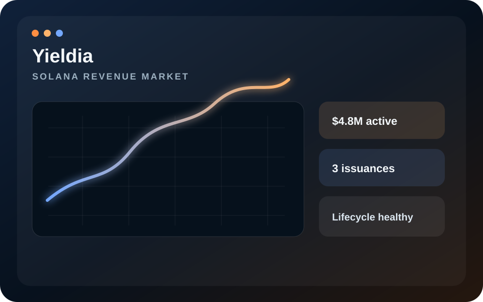
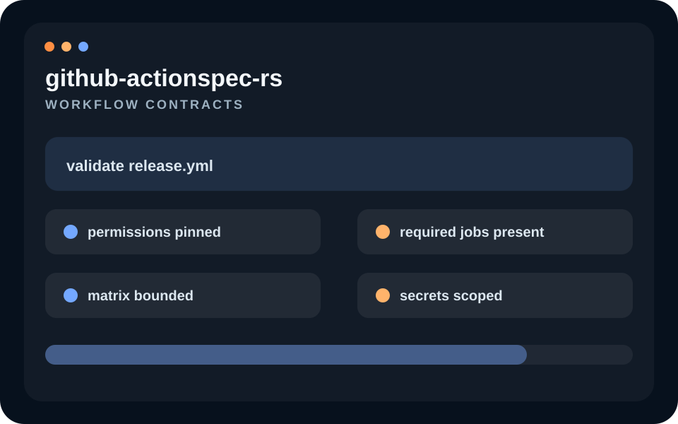
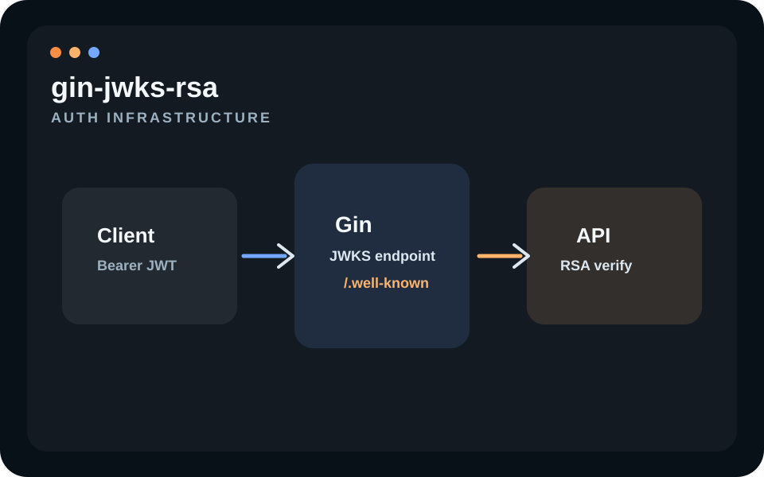
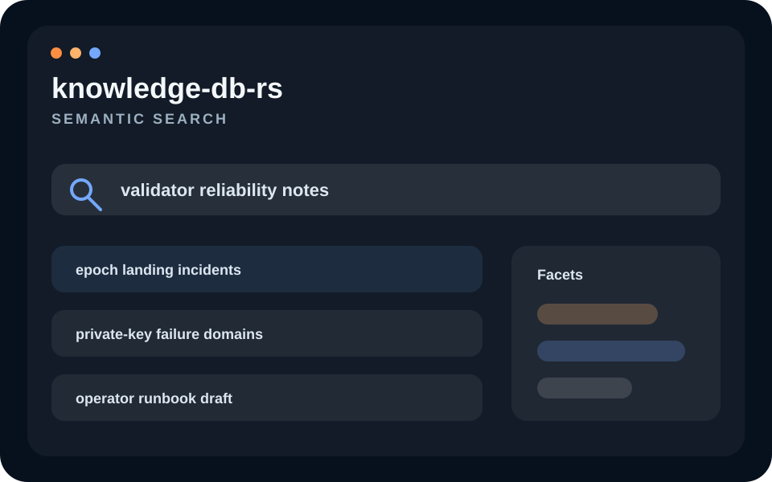
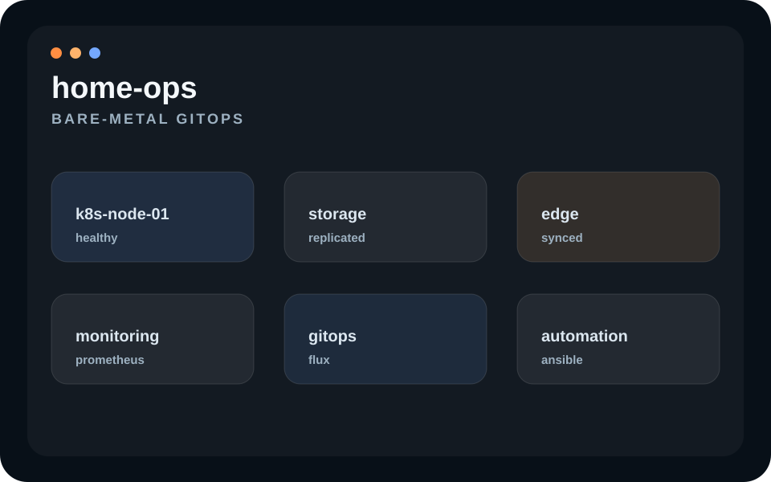
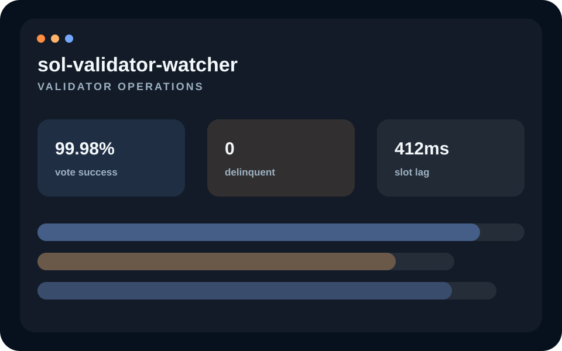
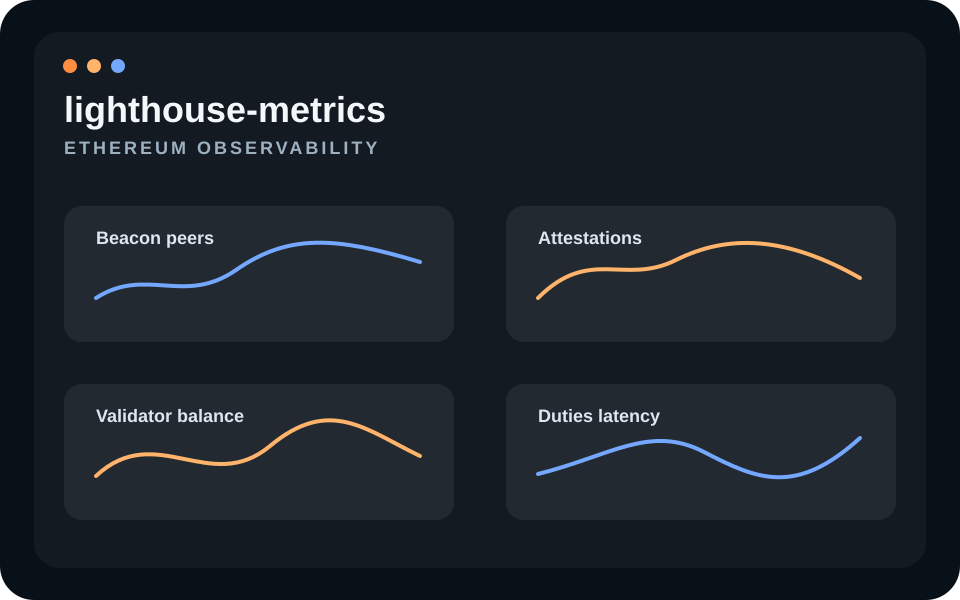

Projects
Selected technical projects
Public repos and selected private systems by Joel Rousseau, also searchable as valproik and v4lproik. The work spans protocol tooling, operator-facing infrastructure, workflow contracts, auth infrastructure, semantic search, and observable systems built around real constraints.
Rust
Go
Solana
Ethereum
GitHub Actions
Prometheus
Grafana
Docker
Kubernetes
GitOps


gin-jwks-rsa Public Auth infrastructure Go middleware that exposes RSA JWKS endpoints for JWT verification flows, with a small surface area and explicit key-handling behaviour. Go Gin JWKS JWT
knowledge-db-rs Public Knowledge systems A Rust and Next.js knowledge system for ingesting files and links, organizing them with AI, and serving semantic search, backed by a full Docker and GitOps-oriented delivery surface. Rust Next.js AI Docker GitOps
home-ops Public Infrastructure lab Bare-metal and lab operations, infrastructure automation, and node-oriented systems work carried out with the same discipline as production infrastructure. Kubernetes GitOps Bare metal Automation
sol-validator-watcher Public Validator operations Validator-aware monitoring and observability focused on the operating realities that matter to Solana node operators. Solana Monitoring Node ops
lighthouse-metrics Public Ethereum observability A Prometheus and Grafana stack for Lighthouse nodes that makes validator and beacon-node metrics easier to scrape, inspect, and operate in practice. Ethereum Lighthouse Prometheus Grafana